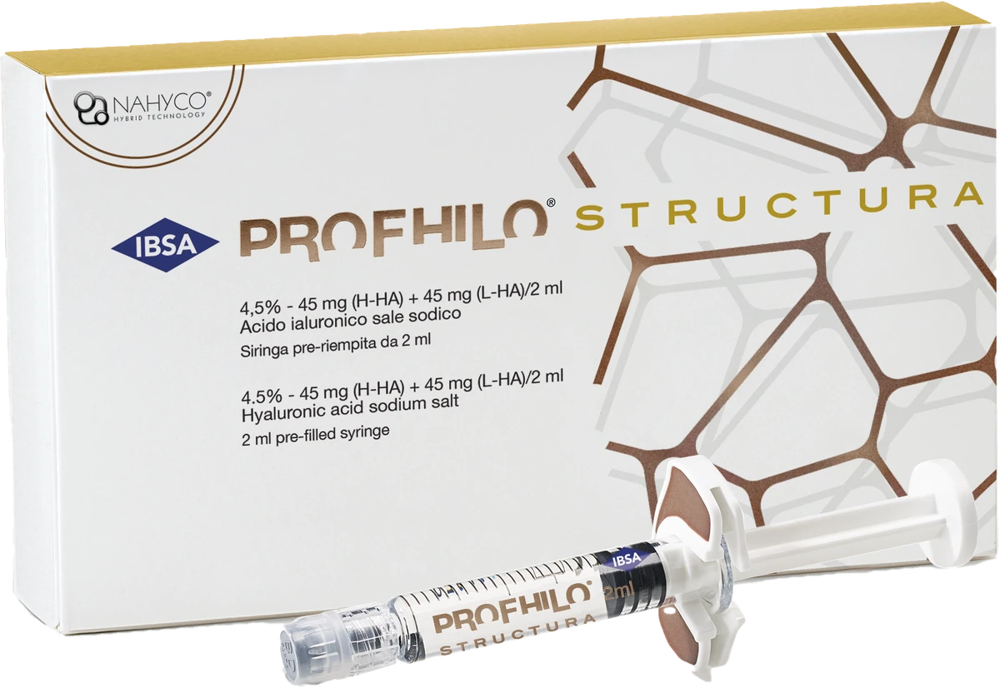

Profhilo Structura in Penang | CANVAS Medical Clinic
The denser IBSA hybrid HA injectable for deeper structural support — administered by our physicians at Gurney Walk, George Town, Penang. Profhilo Structura combines bioremodelling with structural lift for the cheeks, chin and jawline.


What is Profhilo Structura?
Profhilo Structura is IBSA's denser NAHYCO hybrid HA injectable — 45mg of high-molecular-weight HA plus 45mg of low-molecular-weight HA per 2ml, at 4.5% concentration, compared with original Profhilo's 3.2%. That extra density gives Structura more structural support while retaining the bioremodelling mechanism that makes the Profhilo range distinctive.
At CANVAS Medical Clinic in George Town, Penang, Profhilo Structura is physician-administered where a patient needs more than skin-quality improvement alone — typically the cheeks, chin and jawline, where deeper tissue support and bioremodelling both matter.
How it works
- Consultation & assessment. Your physician assesses facial structure, skin quality and laxity, and confirms whether Structura, original Profhilo, a filler, or a combination best suits your goals.
- Targeted injection. Profhilo Structura is injected into points chosen for structural benefit — commonly the cheeks, chin and jawline — using a technique suited to the denser formulation.
- Bioremodelling. The product integrates through the tissue over the following weeks, supporting both structure and skin quality as it bioremodels.
- Review & maintenance. Your physician reviews results and advises on maintenance timing, which varies by individual response and treatment goals.
Benefits
Deeper structural support
A denser HA formulation than original Profhilo, built for areas needing more than surface hydration.
Bioremodelling, not just filling
Still spreads and integrates through the tissue rather than sitting as a discrete volumising bolus.
Collagen & elastin renewal
Supports the same collagen- and elastin-stimulating mechanism as the wider Profhilo range.
Natural-looking definition
Adds structural support to the cheeks, chin and jawline without an obvious filler look.
Minimal downtime
Small injection-point bumps typically resolve within 24–48 hours.
Pairs with original Profhilo
Often combined with standard Profhilo for structure and skin quality in the same programme.
Who it's for
Profhilo Structura may be suitable if you:
- Have mild to moderate volume loss on the cheeks, chin or jawline
- Want structural support without the look or feel of a traditional filler
- Are already using or considering original Profhilo and want more definition in specific areas
- Notice laxity alongside a loss of underlying structural support
- Want a natural-looking improvement that bioremodels rather than simply fills
- Are in your 30s–60s and want to support facial structure over the long term
Profhilo Structura is not suitable during pregnancy or breastfeeding, or with active skin infections in the treatment area. Suitability is confirmed at consultation.
Profhilo Structura vs original Profhilo
At CANVAS we carry both Profhilo and Profhilo Structura. While original Profhilo targets skin quality and laxity, Profhilo Structura is a denser formulation designed for deeper structural support — typically used in areas such as the cheeks, chin and jawline where both bioremodelling and deeper tissue support are needed.
Your physician will assess which product — or combination — is right for your face.
Why CANVAS
At CANVAS Medical Clinic, Profhilo Structura is administered only by qualified, LCP-certified physicians who take time at consultation to assess whether Structura, original Profhilo, or a combination approach best suits your facial structure and goals.
We are located at Gurney Walk in the heart of George Town, with covered parking at Gurney Walk and Gurney Plaza. Walk-ins are welcome but we recommend booking in advance.
- LCP-certified physicians administer every treatment
- Assessment-led — Structura, Profhilo or a combination, whichever suits you
- Both Profhilo and Profhilo Structura available
- Honest assessment — we'll tell you if another treatment suits you better
- Central Gurney Walk location with easy covered parking
Profhilo Structura in Penang, answered.
Care led by our physicians
Your Profhilo Structura treatment at CANVAS is planned and carried out by qualified, LCP-certified doctors registered with the Malaysian Medical Council — care is never delegated to unsupervised operators. Meet the physicians behind your treatment:
- LCP CertifiedPhysician-led care
- MMC RegisteredQualified doctors
- Authentic ProductsLicensed & registered
- Open Daily10am – 10pm
Related treatments
Explore other physician-led treatments at our Gurney Walk clinic in George Town, Penang.
From our patients
Read our reviews on Google →Considering Profhilo Structura in Penang?
Book a consultation at our Gurney Walk clinic. Our physicians will assess your facial structure, explain your options and design a Profhilo Structura programme — or combination approach — that genuinely suits your goals.
Reserve a Consultation